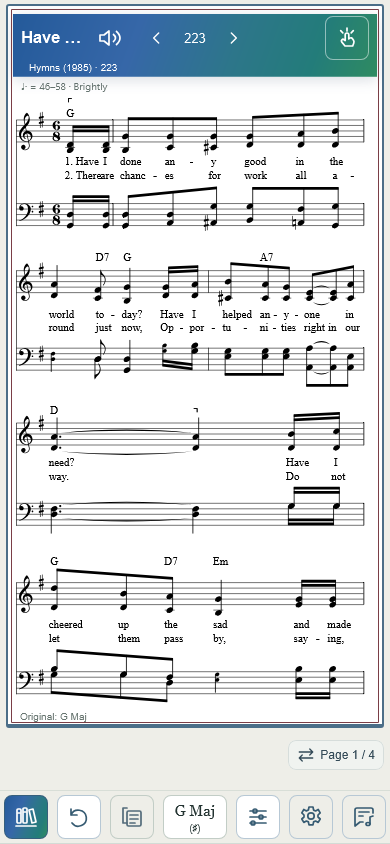
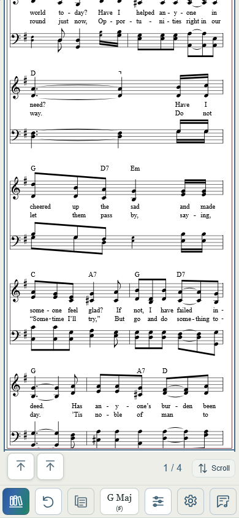
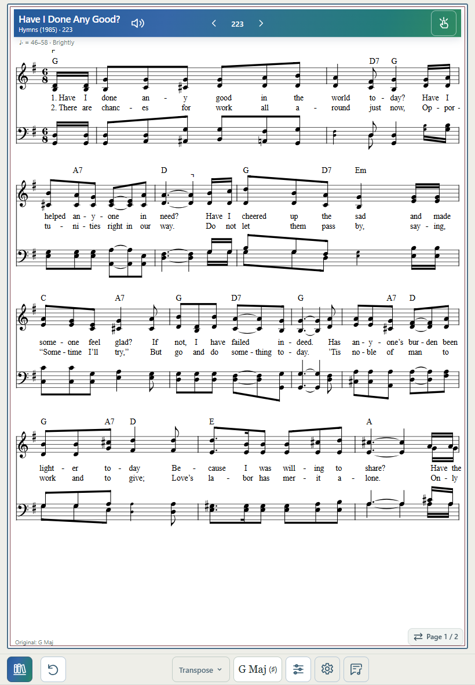
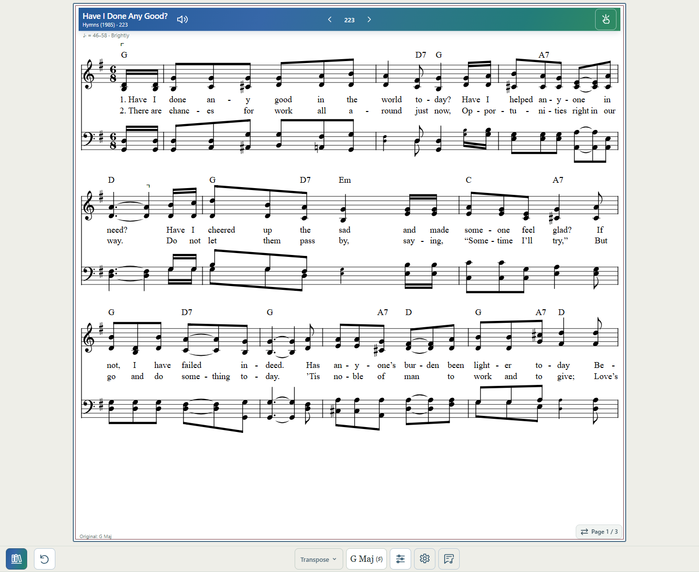

2026-10-04. Baseline: 1f91278. Implemented the confirmed phone arrangement: music, a separate right-aligned Page/Scroll strip, then one row of controls. Physical Safari acceptance remains pending.
The existing speaker moved from the right actions group to immediately beside the title. Previous / current number / Next is centered independently; Tap/help remains right. Short titles do not leave a large gap before the speaker; long titles ellipsize. Phone headers are 63px high to retain a readable source line below the 44px controls; tablet/desktop remain 48px. Narrow phones necessarily show less title text.
The number uses source-context songNumber/page and falls back to Song. Verified 20b, 1004, 1035, membership-specific 103, and unnumbered Files. It changes only after successful opening; a delayed Next retained 85 until 87 opened. Navigation retains all six unavailable exclusions: 85 has Previous 84 and Next 87.
Library → Reset → View → Key → Tools → Settings → Lyrics. All icon controls remain 44×44px; Key is at least 64×44px, with readable key name and smaller signature underneath. View uses a 24px stacked-score SVG with 1.7px stroke; its accessible label and full textual menu preserve the current mode. Original hides inapplicable controls without placeholders. Removed obsolete two-row assignments.
Measured footer height is 54px, down from 102px, before home-indicator padding. A simulated 34px safe inset yields 88px. Existing footer-viewport handling is unchanged; measured --playing-bar-height tracks the actual footer. No hard-coded old two-row reservation remains.
On phones, the 44px Page/Scroll control sits 5px below the visible score frame, aligned with its right edge and at least 5px above the footer. Temporary turn feedback sits beside it. A 54px status allowance reserves its height and gaps in the page budget. Continuous retains document scrolling; presentation clipping keeps score ink out of the visible status strip. Back-to-top controls remain reachable on the left. The Score View popup is reparented outside the clipped sheet so its existing menu stays usable.
Tablet/desktop use the prior chip positioning calculation. Automated baseline comparison for Hymn 30 at 820/1024/1440 confirmed identical PDF/Full/Melody counts and footer/chip bounds within 0.6px. No packing algorithm, gesture threshold, or navigation default was changed.
Commands: node tests/score-polish-baseline.mjs (before change); POLISH_WIDTH=… node tests/score-screen-polish.mjs; node tests/score-polish-identity.mjs; node tests/score-polish-navigation.mjs; node tests/score-polish-search.mjs; node tests/score-polish-header.mjs; JavaScript syntax checks; git diff --check. No broad harmony, Melody corpus, or unrelated suites.
Product files: app.js, index.html, library.js, navigation.js, styles.css, virtual-pages.js, sw.js (shell version v221). Six focused test scripts and this report/evidence. Existing diagnostic work remains unmodified and uncommitted. Source scores, harmony overlays, extraction, transposition, audio engine, metronome, Library theme, Search semantics, and navigation gestures remain unchanged.
Commit and live deployment are reported in the completion message. Physical iPhone verification is still required for Safari chrome, home-indicator clearance, title readability, playing posture, and repeated view switching. Emulated WebKit is not physical Safari confirmation.
Measured results and baseline comparisons



